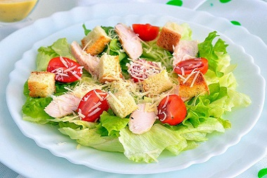

Найкращий рецепт салату "Цезар"
Коли гості вимагали їжі, а на кухні майже нічого не залишилося, Кардіні вигадав салат Цезар і подав його клієнтам. Оригінальний рецепт включав ціле листя салату, яйця і грінки, а також спеціальну заправку для салату. Щоб зробити Цезар більш ситним, до нього часто додають курку, помідори, креветки або бекон. Приготувати салат Цезар вдома можна з класичною заправкою, магазинним соусом Цезар або з заправкою з майонезу або сметани.
Інгредієнти для салату:
Інгредієнти для заправки:
Спосіб приготування

Крок 5
